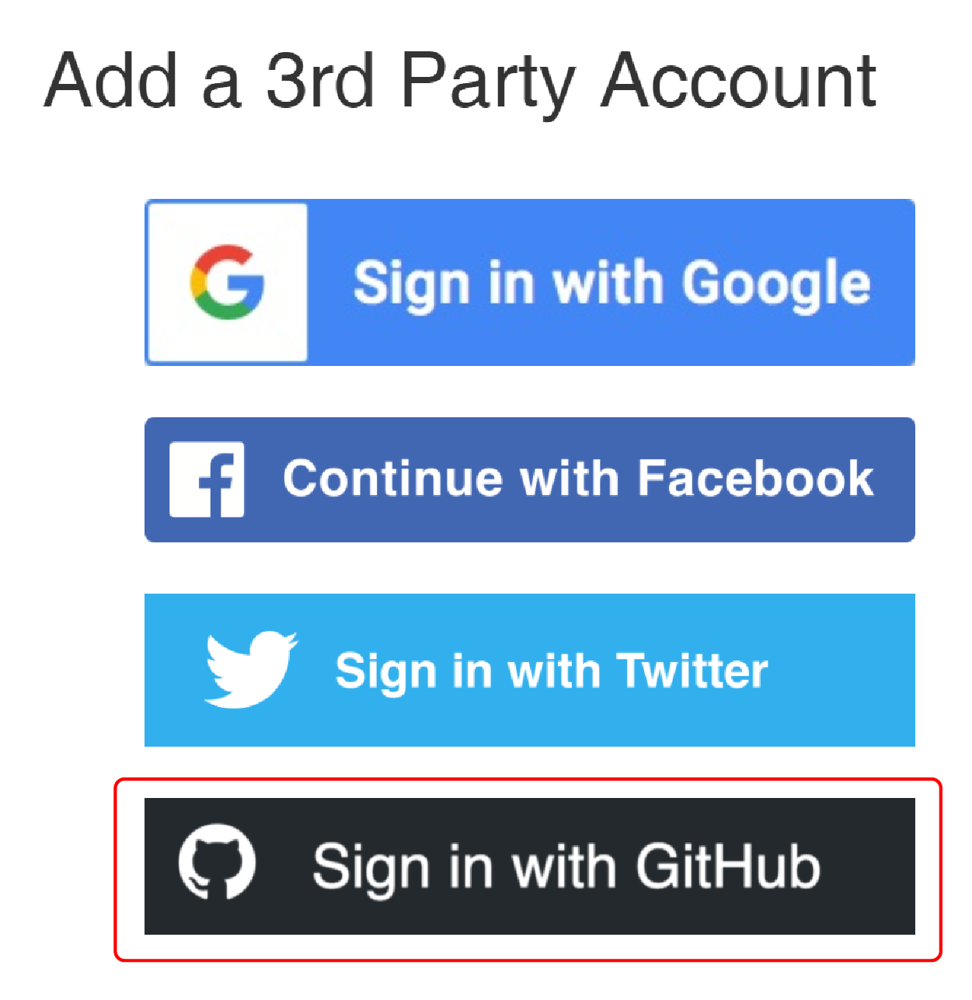
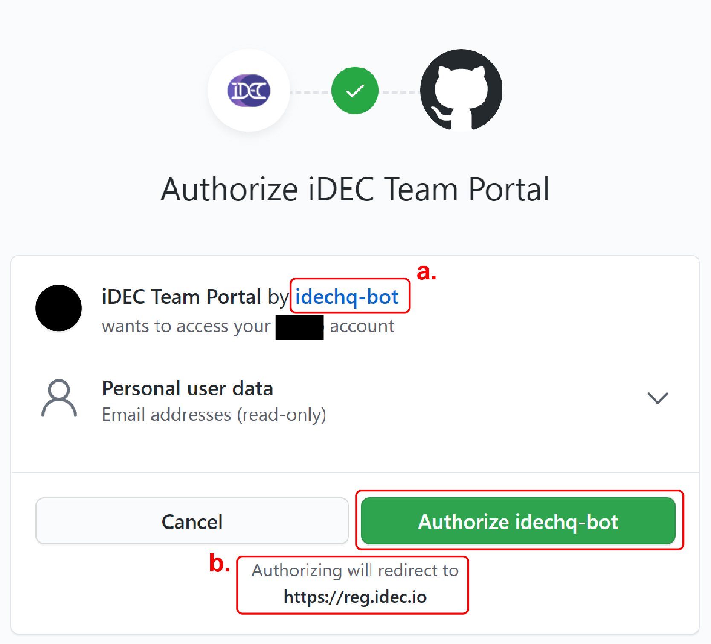
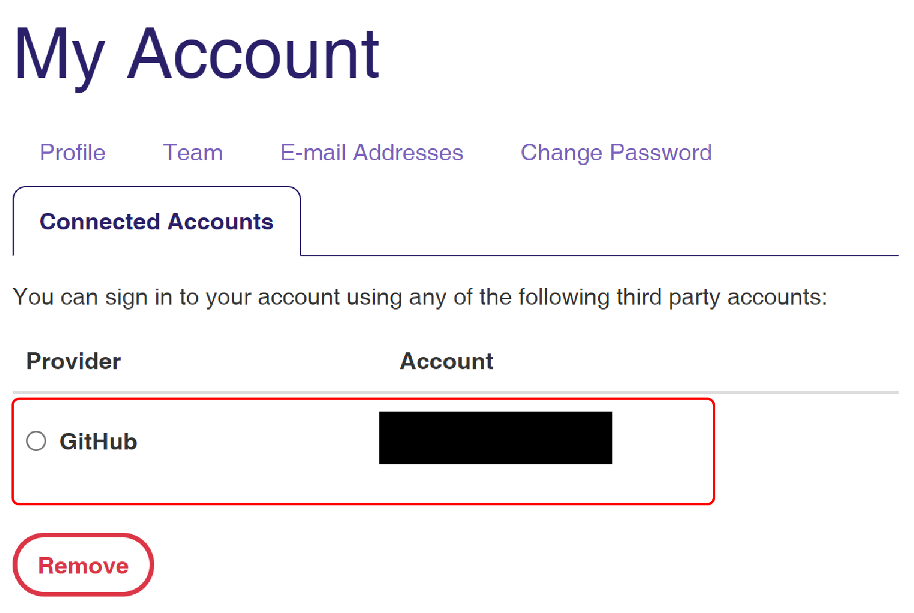
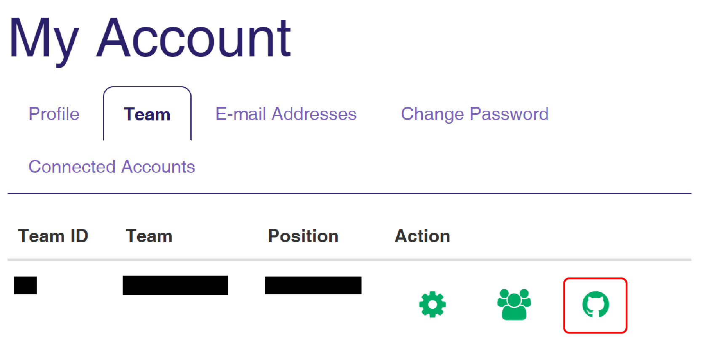
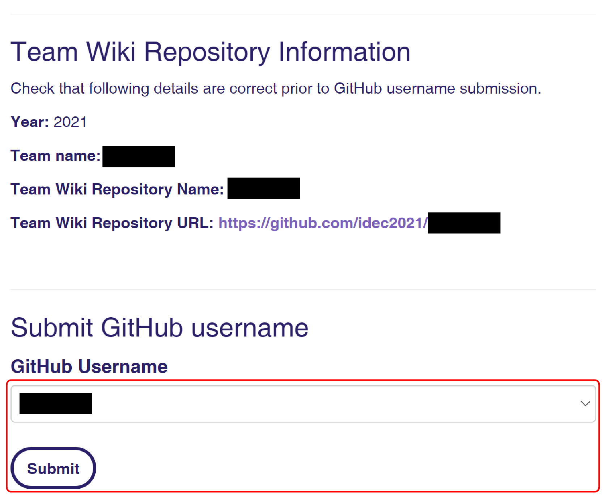
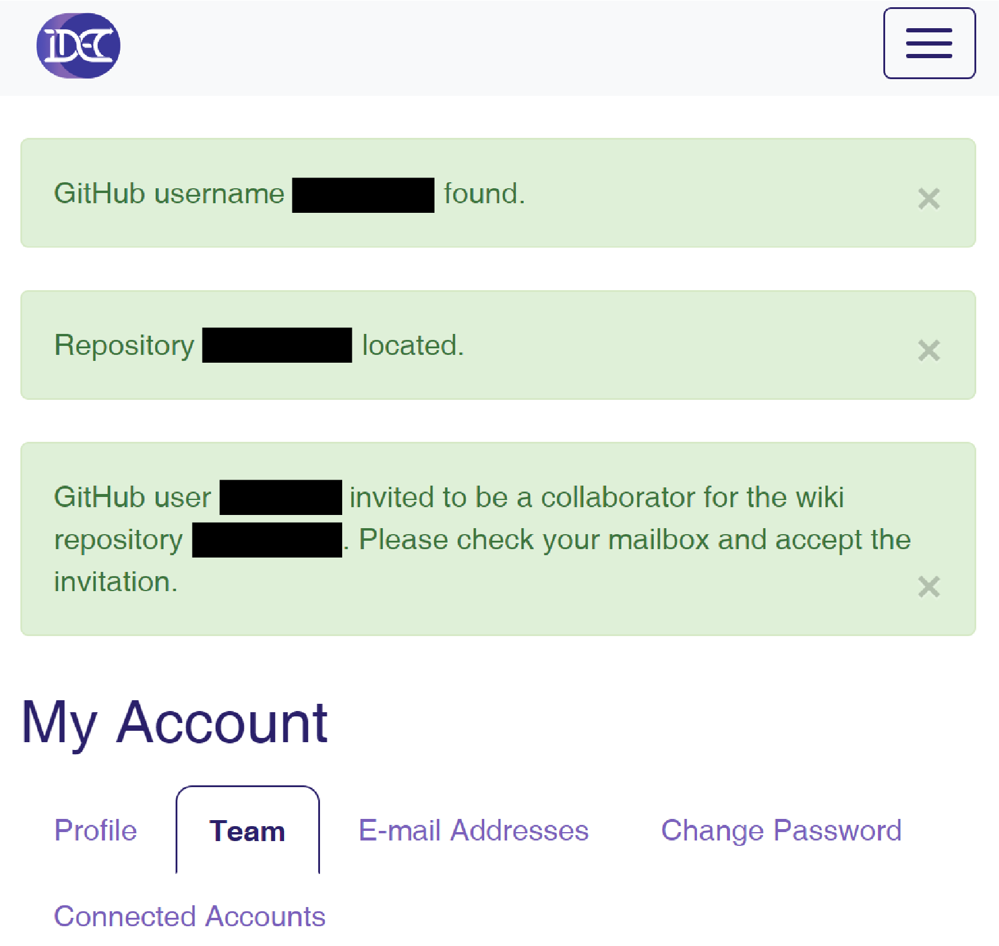

Accessing your wiki repository
You will need permission to write directly into and configure settings in your team wiki repository. To do so, follow the steps below:
- Register for a GitHub account if you do not have one yet
- Go to reg.idec.io/accounts/social/connections/ and sign in
- Under Add a third party account, click Sign in with GitHub
 - Authorize the iDEC Team Portal app
Take note that:
a. App is created by idechq-bot
b. App redirects to https://reg.idec.io/
 - Check that your GitHub account is now connected to your registered account
 - Go to the Team tab
- Click the green GitHub icon button for your team
 - You will be redirected to a new page. Here, check that your team information is correct 
- At the bottom of the page, the system should have detected your connected GitHub username(s)
- Pick the username you want to add, if you connected multiple GitHub accounts
- Click on the submit button
- You should see 3 success messages near the top of the page if you are successfully invited 
- Check your email (the one registered with GitHub) and look for an invitation to join the repository
- Accept the invitation
- You can now manage your wiki repository with maintain permission
Attention
You will not be able to join your assigned wiki repository when wiki-freeze commences.
Error due to double connections
You cannot connect the same GitHub account more than once to the iDEC Team Portal. If you run into a "Social Login" failure page, it could be due to your attempt to connect your GitHub account again. A potential fix for this issue, is to login to your GitHub account and visit the settings, applications configuration. Under Authorized OAuth Apps, choose iDEC Team Portal, and then Revoke access. This will disconnect your GitHub account with the Team Portal and you can try to reconnect again.
Other issues?
If you run into any issues please contact us in our Slack workspace iDEC2021.
You can also email us at support@idechq.org.